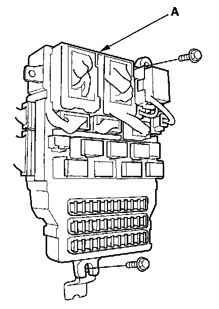

Under-dash Fuse/Relay Box
Under-dash Fuse/Relay BoxRemoval and Installation
SRS components are located in this area. Review the SRS component locations. and precautions and procedures before performing repairs or servicing.
Removal
1. Make sure you have anti-theft codes for the audio and navigation system (if equipped).
2. Make sure the ignition switch is OFF.
3. Disconnect the negative battery cable, then disconnect the positive cable, and wait at least 3 minutes.
4. Remove the left kick panel.

5. Disconnect the connectors from the fuse side of the under-dash fuse/relay box (A).
6. Remove the mounting bolts, and pull the fuse/relay box away from the body.
7. Disconnect the connectors from the back side of the under-dash fuse/relay box, then remove the under-dash fuse/relay box.
8. Carefully remove the relays by prying under the base of the relay.
NOTE: Do not use pliers. Pliers will damage the relays, which could cause the engine to stall or not start.
Installation
NOTE: The MICU which is part of the under-dash fuse/relay box is a component of the immobilizer system. Because of this construction, the MICU must be registered when the under-dash fuse/relay box is replaced, or the vehicle will not start.
1. Install the relays and connect the connectors to the under-dash fuse/relay box, then install the under-dash fuse/relay box in the reverse order of removal.
2. Install the removed parts in the reverse order of removal.
3. Connect the positive cable to battery, then connect the negative cable to the battery.
4. If the under-dash fuse/relay box is replaced, go to step 5. If the original under-dash fuse/relay box is installed, go to step 10.
5. Connect the HDS to the data link connector.
6. Turn the ignition switch ON (II).
7. Select the BODY ELECTRICAL, then enter the IMMOBILIZER SETUP.
8. Select the REPLACE MPCS/MICU/IMOES, then select the suitable menu from the HDS indications.
9. After registration, confirm that the vehicle will start.
10. Enter the audio and navigation system anti-theft codes, and set the clock.
11. Confirm that all systems work properly.